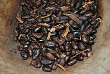
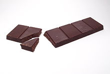

Chocolate is a preparation of roasted and ground cacao seeds that is made in the form of a liquid, paste, or in a block, which may also be used as a flavoring ingredient in other foods. The earliest signs of use are associated with Olmec sites (within what would become Mexico’s post-colonial territory) suggesting consumption of chocolate beverages, dating from the 19th century BC. The seeds of the cacao tree have an intense bitter taste and must be fermented to develop the flavor. After fermentation, the beans are dried, cleaned, and roasted. The shell is removed to produce cocoa nibs, which are then ground to cocoa mass, unadulterated chocolate in rough form. Once the cocoa mass is liquefied by heating, it is called chocolate liquor. The liquor may also be cooled and processed into its two components: cocoa solids and cocoa butter. Baking chocolate, also called bitter chocolate, contains cocoa solids and cocoa butter in varying proportions, without any added sugar. Powdered baking cocoa, which contains more fiber than cocoa butter, can be processed with alkali to produce dutch cocoa. Much of the chocolate consumed today is in the form of sweet chocolate, a combination of cocoa solids, cocoa butter or added vegetable oils, and sugar. Milk chocolate is sweet chocolate that additionally contains milk powder or condensed milk. White chocolate contains cocoa butter, sugar, and milk, but no cocoa solids. Chocolate is one of the most popular food types and flavors in the world
COCOA TREE
COCO BEAN
CHOCOLATE
Remember to book yours NOW!